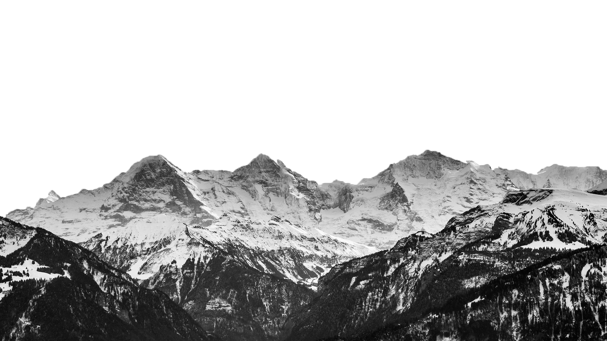
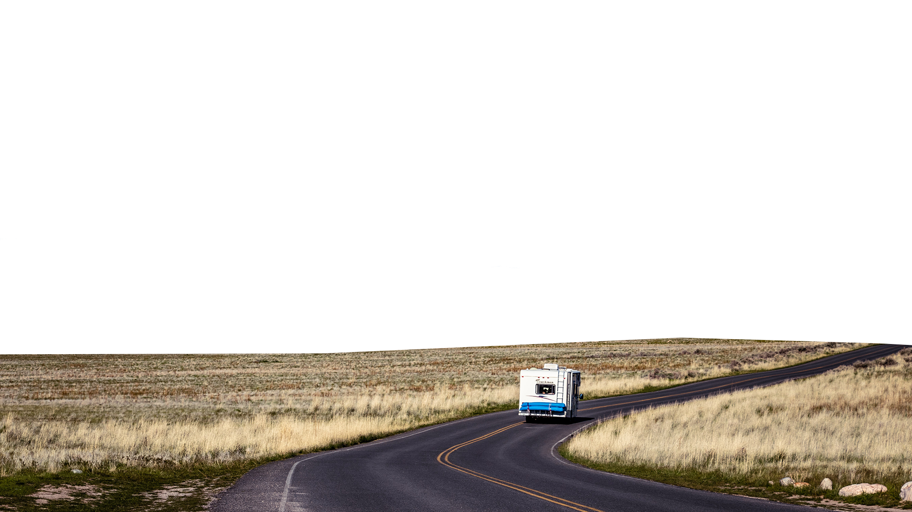
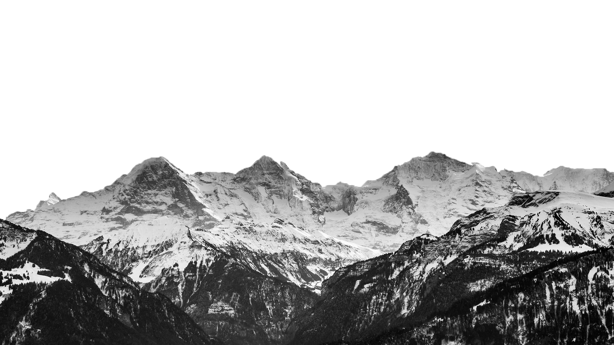
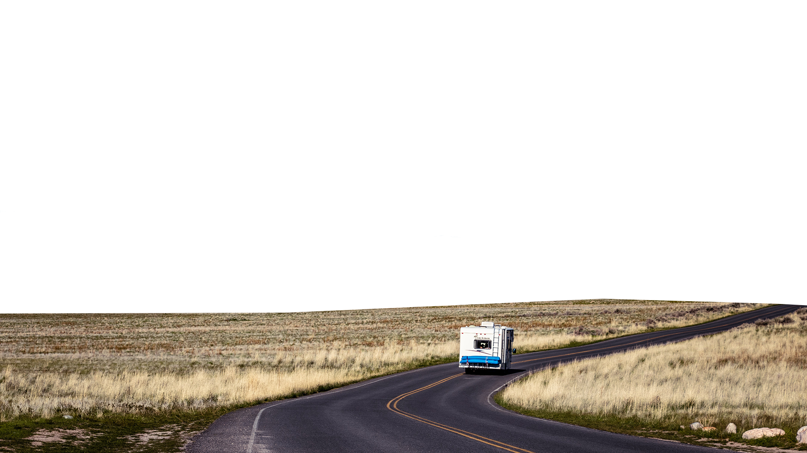
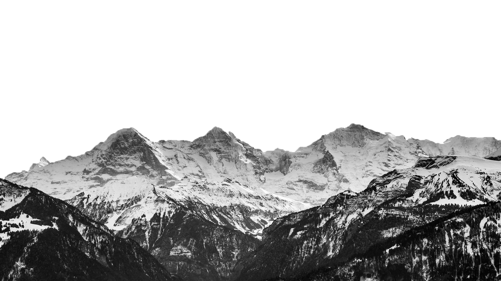
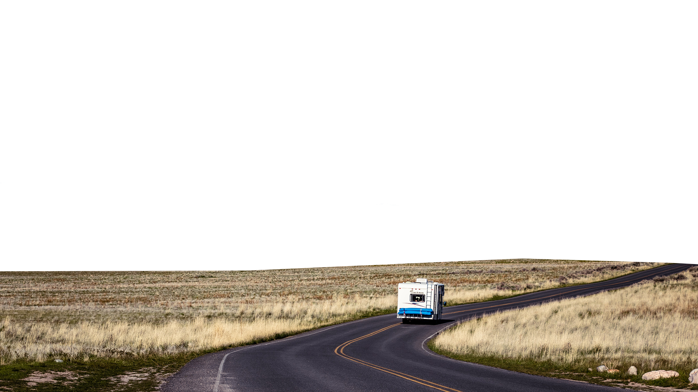
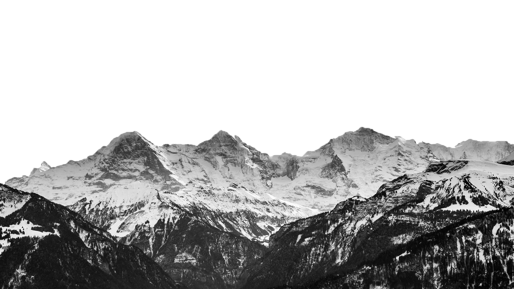
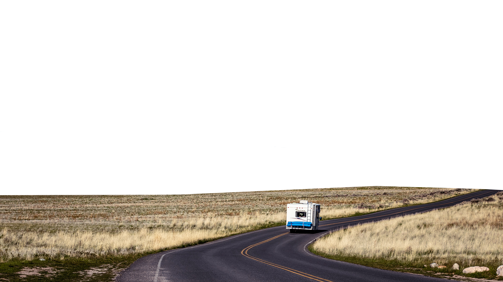

Nature, in the broadest sense, is the physical world or universe. "Nature" can refer to the phenomena of the physical world, and also to life in general. The study of nature is a large, if not the only, part of science. Although humans are part of nature, human activity is often understood as a separate category from other natural phenomena.
The word nature is borrowed from the Old French nature and is derived from the Latin word natura, or "essential qualities, innate disposition", and in ancient times, literally meant "birth".[2] In ancient philosophy, natura is mostly used as the Latin translation of the Greek word physis (φύσις), which originally related to the intrinsic characteristics of plants, animals, and other features of the world to develop of their own accord.[3][4] The concept of nature as a whole, the physical universe, is one of several expansions of the original notion;[1] it began with certain core applications of the word φύσις by pre-Socratic philosophers (though this word had a dynamic dimension then, especially for Heraclitus), and has steadily gained currency ever since.
Within the various uses of the word today, "nature" often refers to geology and wildlife. Nature can refer to the general realm of living plants and animals, and in some cases to the processes associated with inanimate objects—the way that particular types of things exist and change of their own accord, such as the weather and geology of the Earth. It is often taken to mean the "natural environment" or wilderness—wild animals, rocks, forest, and in general those things that have not been substantially altered by human intervention, or which persist despite human intervention. For example, manufactured objects and human interaction generally are not considered part of nature, unless qualified as, for example, "human nature" or "the whole of nature". This more traditional concept of natural things that can still be found today implies a distinction between the natural and the artificial, with the artificial being understood as that which has been brought into being by a human consciousness or a human mind. Depending on the particular context, the term "natural" might also be distinguished from the unnatural or the supernatural.